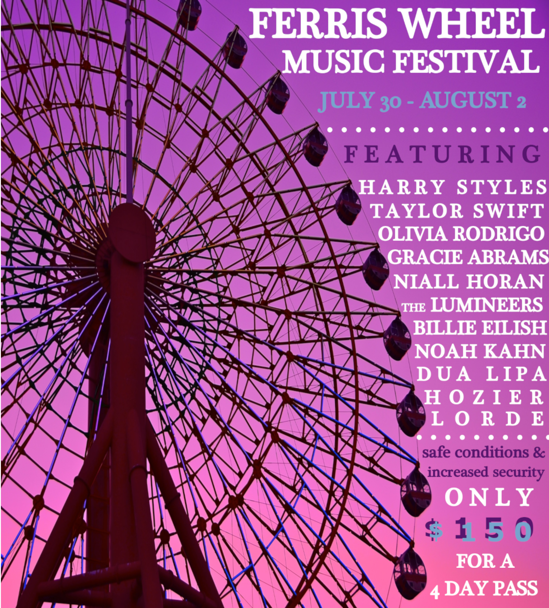
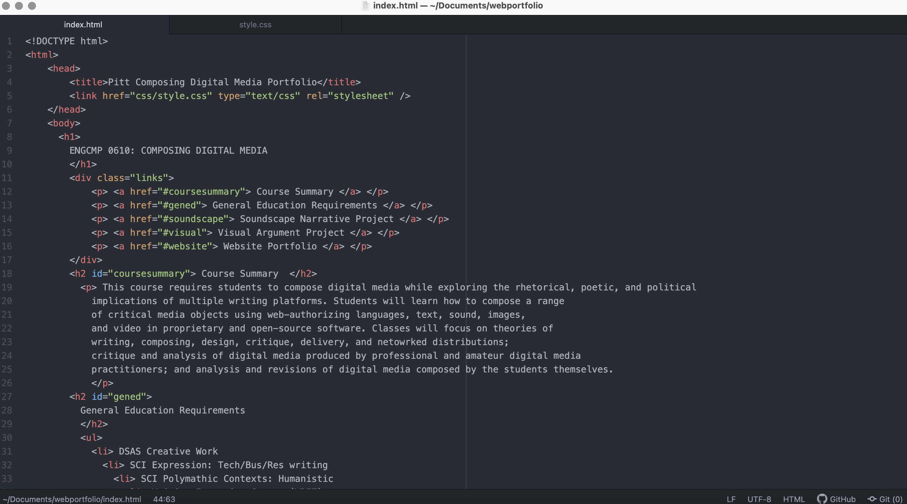

This course requires students to compose digital media while exploring the rhetorical, poetic, and political implications of multiple writing platforms. Students will learn how to compose a range of critical media objects using web-authorizing languages, text, sound, images, and video in proprietary and open-source software. Classes will focus on theories of writing, composing, design, critique, delivery, and netowrked distributions; critique and analysis of digital media produced by professional and amateur digital media practitioners; and analysis and revisions of digital media composed by the students themselves.
Create a clear narrative story with only the use of sounds and audio clips. The two main goals are to learn how to record and find appropriate sound clips and to edit them using digital tools with an emphasis on creating an immersive environment in order to clearly convey the narrative.
Create a rhetorical visual argument through the use of images and text. This project is similar to a collage with the added element of conveying a message or argument. The two main goals are to learn how to obtain images in compliance of copyright laws and to edit them using digital tools.
Build a website using basic HTML and CSS files along with various media elements. The two main goals are to learn to manage a larger project consisting of multiple interlinking files and to explore web design.
